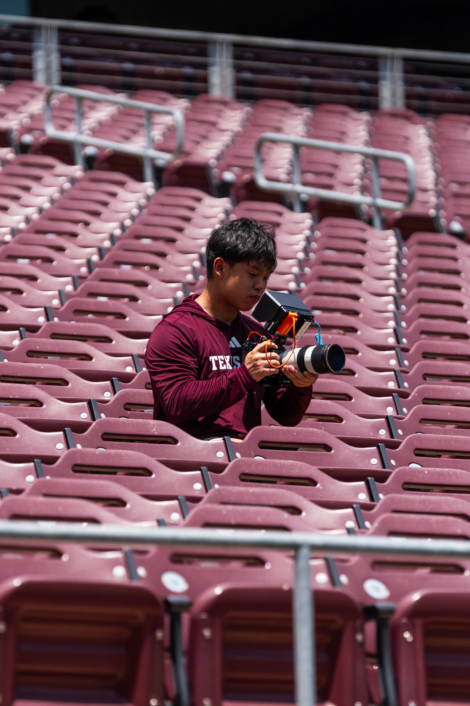

Videography
I first got into videography during my junior year of high school, when I started creating videos for projects in one of my classes. After buying my first camera during my sophomore year of college, I began filming sports, starting with volleyball for the men's volleyball team. In April 2026, I started working with the Aggie football creative team, where I shoot video and edit content.